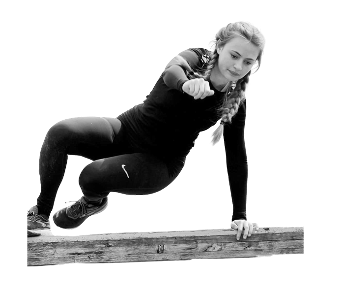
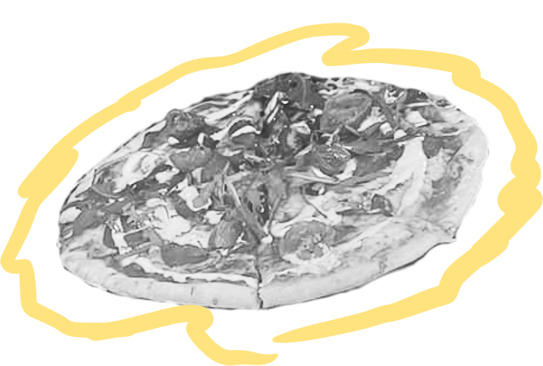
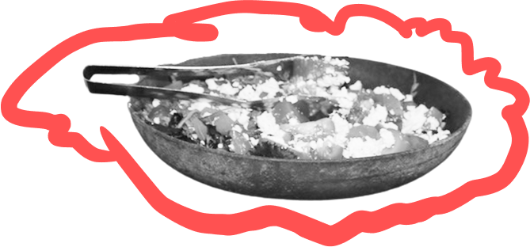

Fællesaktiviteter

Morgensamling
En vigtig del af det at være på HE er vores morgensamlinger. Hver
morgen mødes vi i Samlingssalen, hvor vi synger en sang og bliver
inspirerede af korte oplæg om livet og det, der rører sig. To dage
om ugen ser vi dagens nyheder.
Fagdage
Hver mandag har vi fagdag, hvor hele dagen afsættes til fordybelse i
forskellige fag og emner. Det kan være i almindelige fag, linjefag,
bevægelsesfag, praksisk-musiske fag, kreative fag, uddannelsesfag
osv.
Sang- og fortælletime
Alt det som kan give os en følelse og samhørighed.Her får I
fortællinger. Personlige fortællinger, gamle myter, aktuelle emner,
musikkens historie, Danmark gennem tiderne, etiske spørgsmål – og
alt mulig andet. Og så synger vi en masse! Sangene er alt lige fra
gamle folkeviser til de sidste nye hits både på dansk og engelsk.
Sangene fortæller en historie og binder os sammen som mennesker. Med
andre ord – almen dannelse og viden bliver listet ind under huden i
disse ugentlige lektioner, og forhåbentlig får du øjnene op for nye
aspekter af det at være menneske.
Bevægelsesfag
Det er vigtigt at bruge kroppen! I bevægelsesfag kommer vi ud af
hovedet og ned i kroppen, og vi gør det sammen. Det gør vi på mange
forskellige måder, og for det meste er det ikke som i en helt
almindelig idrætstime i en folkeskole. Det er mere i form af
teambuildings – og samarbejdsøvelser, koordieringsøvelser,
fælleslege og danse. Det må nemlig gerne være sjovt at bevæge sig!
Ejerskabet
Ejerskabet er vores demokratifag, hvor alle elever og lærere mødes
for at tale om hverdagen på skolen. Det er skolens elevråd, der
sammen med et par lærere står for Ejerskabet. Her kan stort og småt
tages op, og det er en god mulighed for at få indflydelse på
hverdagen. Her lærer du, hvordan en demokratisk proces foregår, og
hvad der skal til for, at alle i et fællesskab får muligheden for at
blive hørt. Det er nemlig sådan en skole, vi gerne vil have. En hvor
alle har en stemme!
Aftenarrangementer
Fælles for disse er at de foregår efter aftensmad. Det kan være en
koncert, et foredrag, et kontaktgruppearrangement, et spontant
planlagt program og meget andet.
K-grupper
Noget om k-grupper

Fritiden


Udendørsarealer
HE har mange smukke, hyggelige grønne arealer, som bruges dagligt i
fritiden såvel som i undervisningen. Om du bare har brug for en
stille plet græs, eller om du vil spille basket eller beachvolley
med femten andre – der er muligheder for det hele. Måske vil I
hyggesnakke ved bålpladsen eller chille i udekøkkenet. Bænke og
borde overalt lægger op til masser af hygge med vennerne.
Hallen
Er du bidt af en gal sportsmand? Så er hallen et af de steder, du
hurtigt lærer at kende. Vi har plads til badminton, volley, basket
og meget mere. Du må selvfølgelig også bruge hallen i din fritid.
Styrketræning
Vi har mange idrætsfaciliteter, her i blandt styrketræningslokalet.
Her kan du finde løbebånd, romaskine, styrkeløft og andre
træningsmaskiner.
Opholdsstuerne
I hovedbygningen finder du skolens eneste fjernsyn til fri
afbenyttelse, så det er demokratiet, der afgør, om det er “Paradise
Hotel” eller TV-avisen, der skal ses. Her er også micro-ovn,
billardbord, airhockey og bordtennis samt masser af brætspil, så du
kan hygge dig med vennerne i fritiden.
Billedkunst
Stedet hvor man godt må rode, klatte med maling og blive beskidt.
Her laves mange kreative projekter, og lokalet benyttes også i
fritiden og alternative uger.
Keramik
Her kan du bruge mange timer, hvis du har en kreativ side, der higer
efter at modellere, dreje eller pølse krukker og vaser. Du må gerne
bruge lokalet i fritiden.
Anerledes uger og arrangementer

Indskolingsuge
Vi starter skoleåret med en indskolingsuge. Her er det først og
fremmest meningen, at I som hold skal rystes godt sammen. Du skal
lære din nye kontaktlærer og kontaktgruppe at kende (11 personer).
Du skal med til det første husmøde, med dem du bor sammen med (ca.
40 pers). Du skal møde dit linjefagshold, vælge valgfag og placeres
på forskellige stamholdhold. Derudover skal du lære skolen og byen
lidt af at kende.
Tur i det blå
Efter ca. fire uger tager vi afsted på en to dages ”
ryste-sammen-tur ”. I bliver kørt et stykke væk fra skolen i bus og
bliver sat af i grupper af 4-5 elever. Undervejs skal I løse
forskellige opgaver. I overnatter undervejs og kommer tilbage til
skolen næste formiddag. Det er en af de ture, I vil huske i mange år
fremover.
Alternativ uge
I efteråret sætter vi alle sejl ind og arbejder en hel uge med et
udvalgt emne på forskellige kreative værksteder. Nogle af emnerne
har før været en tidsperiode som 80´erne, FN verdensmål eller
“fremtidsdrømme”. Emnet er forskelligt år efter år alt efter, hvad
der rører sig i elevflokken og i verden. Skolen plejer at syde af
aktivitet, og det er en uge, hvor vi har meget travlt, og hvor alle
kompetencer og talenter udnyttes. Det kulminerer med en showaften,
hvor elevernes familier er inviteret.
OSO
Alle 10. klasser har en uge med Obligatorisk Selvvalgt Opgave
(OSO-opgave). Med udgangspunkt i din uddannelsesplan og dit
erhvervsvalg arbejder du med et emne. Her er der mulighed for at
kombinere det med erhvervsbesøg, et par dages praktik, interview med
en som har jobbet. En spændende uge med masser af aktivitet og
masser af muligheder.
Brobygning
Alle 10. klasses elever sendes i brobygning. Med udgangspunkt i din
uddannelsesplan får du mulighed for at prøve flere
uddannelsesretninger af. Du bor på skolen under hele forløbet og
følges hver morgen med nogle af dine kammerater, der har valgt samme
ungdomsuddannelse. Bliv klogere på din fremtid.
Skilejrskole
I januar eller februar drager vi alle afsted på skilejrskole med bus
til hyggelige hytter i Sälen i Sverige. En uge hvor der bliver
mulighed for at få instruktion i alpin ski, inden vi alle begiver os
ud på de nærliggende pister. Hertil kommer en masse hygge indendøre
i hytterne.
Linjefagstur
I en uge i april tager alle elever på studietur sammen på
linjefagene. Om det er den psykologiske rejse, fysiske udfordringer
på La Santa, mangfoldigheden på Malta eller kunsten i Barcelona, der
er i fokus, afhænger af dit linjefag. En ting er helt sikkert. Du
vil opleve en fantastisk uge sammen med dine kammerater og lærere,
som du sent vil glemme.
Erasmustur for Global
Noget om Erasmus.
Høstfest
Noget om høstfest.
Efterskolebryllup
Noget om bryllup.
Superdøgn
Noget om Superdøgn.
Det spiser vi


Sådan laver vi maden
På Høng Efterskole kan du glæde dig til varieret og tæskelækker sund
mad. Vi følger årstidernes gang og har bronze spisemærke i økologi.
Vi spiser både eksperimenterende og mere traditionel dansk mad
tilsat et tvist fra vores egne kokke. Uanset dagens menu, kan du
glæde dig til smagsoplevelser, som du ikke finder på mange andre
efterskoler. Vores kokke er dybt professionelle og kræser for
smagen, sundheden og det visuelle udtryk.
Elever i køkkenet
Teamet i køkkenet suppleres hver dag af skolens elever. Forvent
derfor selv at komme med bag kulissen, når de økologiske råvarer
skal tilberedes; det bliver lærerigt, stærkt hyggeligt og fyldt med
sprøde fristelser.
Specialkost
Vi forsøger at imødekomme allergier og intolerancer. Vi kan desværre
ikke imødekomme veganerkost, men køkkenet laver gerne vegetarkost
efter aftale. Har du fx glutenallergi sørger vi for, at tilrette din
portion, så du kun spiser det, der opfylder dine behov.
Morgenmad
Vores morgenmad består som regel altid af af hjemmebagte boller med
marmelade, smør eller ost. Vi tilbyder også forskellige
morgenmadsprodukter som skyr, havregryn, cornflakes og hjemmelavet
müsli. Køkkenet laver ofte også havregrød, chiagrød eller frugtgrød.
Og selvfølgelig altid the, kaffe og frugt!
Frokost
Frokost er oftest varm mad. Her på Høng Efterskole serverer vi alt
mulig forskellig, lækker mad for eleverne - noget er de retter, du
kender og elsker og andet måske noget, du ikke har smagt før.
Typiske retter kan være: tarteletter, lasagne, pasta med kødsovs,
tomatsuppe, boller i karry, laks, karrysuppe med nudler, daal og
altid masser lækkert grønt til. Køkkenet holder tit temauger fx
asiatisk uge, vegetaruge, mormormad, karryuge, mad fra
Storbritannien.
Aftensmad
Aftensmaden ofte er koldt bord, hvor man kan finde hjemmebagt
rugbrød, forskelligt lækkert pålæg, wraps, sliders, kyllingespyd,
grøntsagsstænger, pizzasnegle eller rester fra frokosten.
Eftermiddags- eller aftenforfriskninger
Når der er forfriskning, står den tit på lækker hjemmebag fra
køkkenet. Det kan være boller, pizzasnegle, pølsehorn, knækbrød,
kanelsnegle, belgiske vafler, gulerodskage eller cookies - og
selvfølgelig altid frugt!